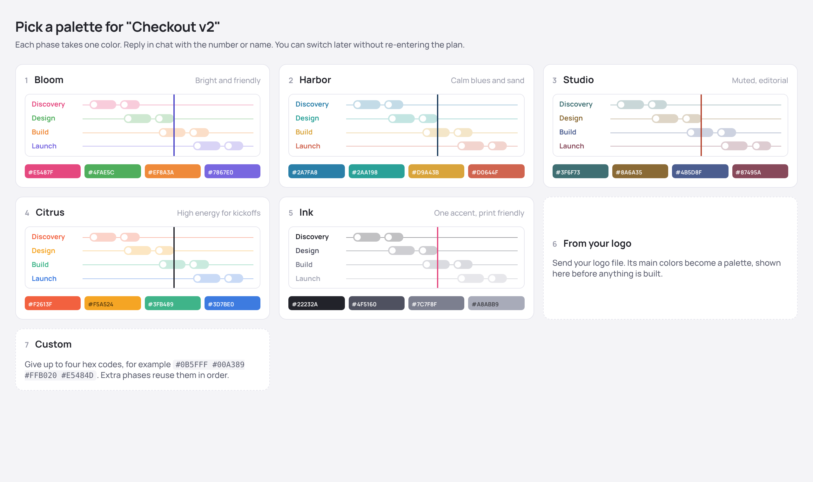
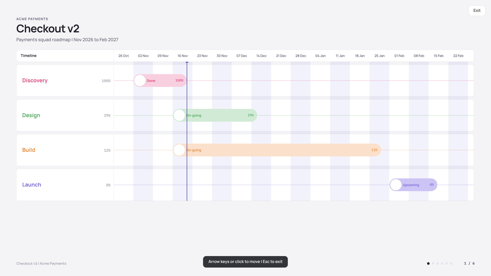
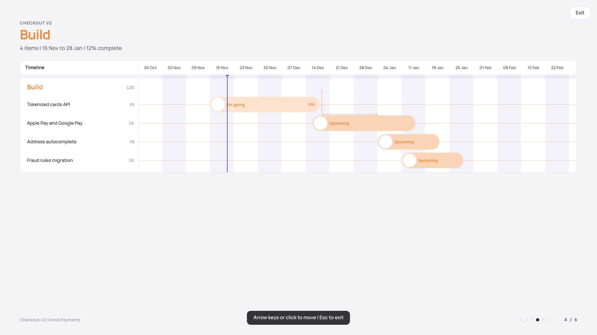

A Claude Code skill. It asks what it needs, shows you palettes, and hands back one HTML file you can drag, present and export to PowerPoint.
This is the exact file the skill produces, built from the example plan in the repo.
A chart is only as good as its inputs, so the skill asks before it draws. Complete data turns questions into quick confirmations; it never skips the parts that are yours to decide.
Answer from scratch, paste a PRD or notes, drop a CSV or Excel file, or pull from Jira, monday.com or Linear.
Chart title, subtitle, and a title for every group. Suggested from your source, confirmed by you.
Only what is missing: dates, owners, dependencies, milestones. Batched, never invented.
Organization name and logo. Attach an image and it goes straight into the header.
Shown as a picture in the chat, including one pulled from your logo, then picked from a prompt.
A summary to approve, then the chart, with a preview image so you see it before you open it.

Press P for a full-screen 16:9 deck: an overview, one slide per group, and the milestones. The PPTX export has the same slides, drawn as native shapes you can edit.

